otherReadStyleMethodsAnalysis
caitlinpage
2026-04-08
Last updated: 2026-04-10
Checks: 7 0
Knit directory: methyl_nano_cf/analysis/
This reproducible R Markdown analysis was created with workflowr (version 1.7.1). The Checks tab describes the reproducibility checks that were applied when the results were created. The Past versions tab lists the development history.
Great! Since the R Markdown file has been committed to the Git repository, you know the exact version of the code that produced these results.
Great job! The global environment was empty. Objects defined in the global environment can affect the analysis in your R Markdown file in unknown ways. For reproduciblity it’s best to always run the code in an empty environment.
The command set.seed(20250606) was run prior to running
the code in the R Markdown file. Setting a seed ensures that any results
that rely on randomness, e.g. subsampling or permutations, are
reproducible.
Great job! Recording the operating system, R version, and package versions is critical for reproducibility.
Nice! There were no cached chunks for this analysis, so you can be confident that you successfully produced the results during this run.
Great job! Using relative paths to the files within your workflowr project makes it easier to run your code on other machines.
Great! You are using Git for version control. Tracking code development and connecting the code version to the results is critical for reproducibility.
The results in this page were generated with repository version 45f9636. See the Past versions tab to see a history of the changes made to the R Markdown and HTML files.
Note that you need to be careful to ensure that all relevant files for
the analysis have been committed to Git prior to generating the results
(you can use wflow_publish or
wflow_git_commit). workflowr only checks the R Markdown
file, but you know if there are other scripts or data files that it
depends on. Below is the status of the Git repository when the results
were generated:
Ignored files:
Ignored: .Rproj.user/
Ignored: analysis/.RData
Untracked files:
Untracked: renv.lock
Untracked: renv/
Unstaged changes:
Modified: .Rprofile
Modified: _workflowr.yml
Modified: analysis/otherReadStyleMethods.Rmd
Note that any generated files, e.g. HTML, png, CSS, etc., are not included in this status report because it is ok for generated content to have uncommitted changes.
These are the previous versions of the repository in which changes were
made to the R Markdown
(analysis/otherReadStyleMethodsAnalysis.Rmd) and HTML
(docs/otherReadStyleMethodsAnalysis.html) files. If you’ve
configured a remote Git repository (see ?wflow_git_remote),
click on the hyperlinks in the table below to view the files as they
were in that past version.
| File | Version | Author | Date | Message |
|---|---|---|---|---|
| Rmd | 45f9636 | caitlinpage | 2026-04-10 | wflow_publish("otherReadStyleMethodsAnalysis.Rmd") |
Introduction
library(annotatr)Warning: replacing previous import 'S4Arrays::makeNindexFromArrayViewport' by
'DelayedArray::makeNindexFromArrayViewport' when loading 'SummarizedExperiment'library(data.table)
library(plyranges)Loading required package: BiocGenerics
Attaching package: 'BiocGenerics'The following objects are masked from 'package:stats':
IQR, mad, sd, var, xtabsThe following objects are masked from 'package:base':
anyDuplicated, aperm, append, as.data.frame, basename, cbind,
colnames, dirname, do.call, duplicated, eval, evalq, Filter, Find,
get, grep, grepl, intersect, is.unsorted, lapply, Map, mapply,
match, mget, order, paste, pmax, pmax.int, pmin, pmin.int,
Position, rank, rbind, Reduce, rownames, sapply, saveRDS, setdiff,
table, tapply, union, unique, unsplit, which.max, which.minLoading required package: IRangesLoading required package: S4VectorsLoading required package: stats4
Attaching package: 'S4Vectors'The following objects are masked from 'package:data.table':
first, secondThe following object is masked from 'package:utils':
findMatchesThe following objects are masked from 'package:base':
expand.grid, I, unname
Attaching package: 'IRanges'The following object is masked from 'package:data.table':
shiftLoading required package: GenomicRangesLoading required package: GenomeInfoDb
Attaching package: 'plyranges'The following object is masked from 'package:IRanges':
sliceThe following object is masked from 'package:data.table':
betweenThe following object is masked from 'package:stats':
filterlibrary(tidyr)
Attaching package: 'tidyr'The following object is masked from 'package:S4Vectors':
expandlibrary(stringr)
library(dplyr)
Attaching package: 'dplyr'The following objects are masked from 'package:plyranges':
between, n, n_distinctThe following objects are masked from 'package:GenomicRanges':
intersect, setdiff, unionThe following object is masked from 'package:GenomeInfoDb':
intersectThe following objects are masked from 'package:IRanges':
collapse, desc, intersect, setdiff, slice, unionThe following objects are masked from 'package:S4Vectors':
first, intersect, rename, setdiff, setequal, unionThe following objects are masked from 'package:BiocGenerics':
combine, intersect, setdiff, unionThe following objects are masked from 'package:data.table':
between, first, lastThe following objects are masked from 'package:stats':
filter, lagThe following objects are masked from 'package:base':
intersect, setdiff, setequal, unionlibrary(ggplot2)
library(edgeR)Loading required package: limma
Attaching package: 'limma'The following object is masked from 'package:BiocGenerics':
plotMADescription of methods here
Analysis
for_beta_all <- readRDS("/researchers/caitlin.page/cf_nano/r_output/rrbs_alpha_beta.rds")
#for_beta <- readRDS("../output/cluster_files/rrbs_alpha_beta.rds")
#gm12878_2 <- readRDS("/researchers/caitlin.page/cf_nano/r_output/rrbs_alpha_beta_rep2.rds")
#k562 <- readRDS("/researchers/caitlin.page/cf_nano/r_output/k562_rep1.rds")
#k562_2 <- readRDS("/researchers/caitlin.page/cf_nano/r_output/k562_rep2.rds")files <- list.files("/researchers/caitlin.page/cf_nano/run_metheor")
files [1] "fdrp_ENCFF000LYO.tsv" "fdrp_ENCFF000LYP.tsv"
[3] "fdrp_k562_cml_line1.tsv" "fdrp_k562_cml_line2.tsv"
[5] "lpmd_ENCFF000LYO.tsv" "lpmd_ENCFF000LYP.tsv"
[7] "me_ENCFF000LYO.tsv" "me_ENCFF000LYP.tsv"
[9] "me_k562_cml_line1.tsv" "me_k562_cml_line2.tsv"
[11] "mhl_ENCFF000LYO.tsv" "mhl_ENCFF000LYP.tsv"
[13] "mhl_k562_cml_line1.tsv" "mhl_k562_cml_line2.tsv"
[15] "pdr_ENCFF000LYO.tsv" "pdr_ENCFF000LYP.tsv"
[17] "pdr_k562_cml_line1.tsv" "pdr_k562_cml_line2.tsv"
[19] "pm_ENCFF000LYO.tsv" "pm_ENCFF000LYP.tsv"
[21] "pm_k562_cml_line1.tsv" "pm_k562_cml_line2.tsv"
[23] "qfdrp_ENCFF000LYO.tsv" "qfdrp_ENCFF000LYP.tsv"
[25] "qfdrp_k562_cml_line1.tsv" "qfdrp_k562_cml_line2.tsv"files <- paste0("/researchers/caitlin.page/cf_nano/run_metheor/", files)MHL
files[grep("mhl", files)][1] "/researchers/caitlin.page/cf_nano/run_metheor/mhl_ENCFF000LYO.tsv"
[2] "/researchers/caitlin.page/cf_nano/run_metheor/mhl_ENCFF000LYP.tsv"
[3] "/researchers/caitlin.page/cf_nano/run_metheor/mhl_k562_cml_line1.tsv"
[4] "/researchers/caitlin.page/cf_nano/run_metheor/mhl_k562_cml_line2.tsv"- MHL 0 based coordinates, my alpha in 1-based coordinates
- so +1 to the start
mhl_gm1 <- read.table(files[grep("mhl", files)][1])
colnames(mhl_gm1) <- c("seqnames", "start", "end", "MHL")
mhl_gm1$start <- mhl_gm1$start + 1
#mhl_gm2 <- read.table(files[grep("mhl", files)][2])
#colnames(mhl_gm2) <- c("seqnames", "start", "end", "MHL")
#mhl_k562_1 <- read.table(files[grep("mhl", files)][3])
#colnames(mhl_k562_1) <- c("seqnames", "start", "end", "MHL")
#mhl_k562_2 <- read.table(files[grep("mhl", files)][4])
#colnames(mhl_k562_2) <- c("seqnames", "start", "end", "MHL")mhl_gm1[1:10,] seqnames start end MHL
1 chr1 779096 779097 0.001587302
2 chr1 779100 779101 0.001587302
3 chr1 779110 779111 0.001587302
4 chr1 779130 779131 0.001587302
5 chr1 827413 827414 0.002083333
6 chr1 827426 827427 0.002083333
7 chr1 827429 827430 0.002083333
8 chr1 827445 827446 0.002083333
9 chr1 827470 827471 0.001666667
10 chr1 827485 827486 0.001666667nrow(mhl_gm1)[1] 397212THEORY: MHL is like a summarised region alpha
LOGIC * MHL: how well meth haplotypes (consec CpGs) conserved throughout cell pop (across reads) for given region * calculates a per cpg value * 0 - all unmethylated, 1 - all methylated, in between - a mix ** the only metric that does this (through metheor - I think someone else modified one of these to distinguish) * in this it’s like alpha - differentiates between states * and it’s a population metric and a read metric
Correlation?
for_beta_all %>% filter(seqnames == "chr1") %>% distinct(seqnames, start) %>% nrow()[1] 94986mhl_gm1 %>% filter(seqnames == "chr1") %>% distinct(seqnames, start) %>% nrow()[1] 36228mhl_gm1 %>% filter(seqnames == "chr1") %>% distinct(seqnames, start) %>% .$start %in% distinct(filter(for_beta_all, seqnames == "chr1"), seqnames, start)$start %>% summary() Mode FALSE TRUE
logical 11211 25017 cg_sites <- cbind(data.frame(Biostrings::matchPattern("CG", BSgenome.Hsapiens.UCSC.hg38::BSgenome.Hsapiens.UCSC.hg38[["chr1"]])), seqnames = "chr1") %>%
mutate(pos = paste0(seqnames, "-", start)) %>%
relocate(pos, seqnames)Warning in .local(x, row.names, optional, ...): 'optional' argument was ignoredcg_sites$index <- 1:nrow(cg_sites)
mhl_gm1 %>% filter(seqnames == "chr1") %>% distinct(seqnames, start) %>% .$start %in% cg_sites$start %>% summary() Mode TRUE
logical 36228 for_beta_all %>% filter(seqnames == "chr1") %>% distinct(seqnames, start) %>% .$start %in% cg_sites$start %>% summary() Mode TRUE
logical 94986 mhl_gm1_subset <- mhl_gm1 %>% filter(seqnames == "chr1")for_beta_all %>% filter(seqnames == "chr1") %>%
group_by(seqnames, start) %>%
summarise(mean_alpha = mean(alpha)) %>%
ungroup() %>%
mutate(mhl = mhl_gm1_subset[match(.$start, mhl_gm1_subset$start), "MHL"]) %>%
ggplot(aes(x = mean_alpha, y = mhl)) +
geom_point(alpha = 0.3)`summarise()` has grouped output by 'seqnames'. You can override using the
`.groups` argument.Warning: Removed 69969 rows containing missing values or values outside the scale range
(`geom_point()`).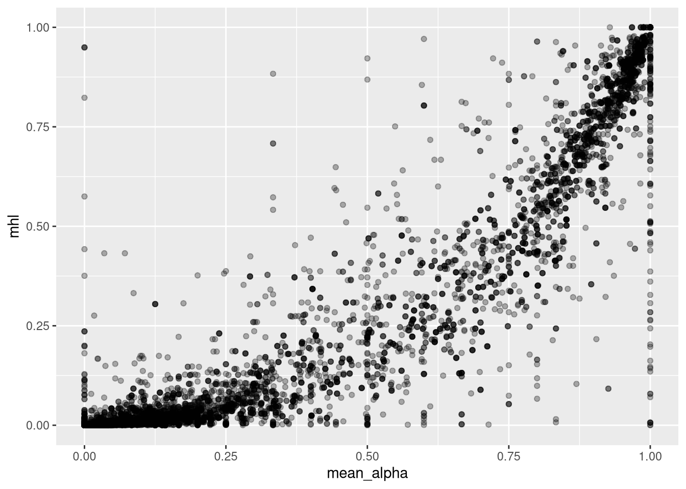
for_beta_all %>% filter(seqnames == "chr1") %>%
distinct(seqnames, start, beta) %>%
mutate(mhl = mhl_gm1_subset[match(.$start, mhl_gm1_subset$start), "MHL"]) %>%
ggplot(aes(x = beta, y = mhl)) +
geom_point(alpha = 0.3)Warning: Removed 69969 rows containing missing values or values outside the scale range
(`geom_point()`).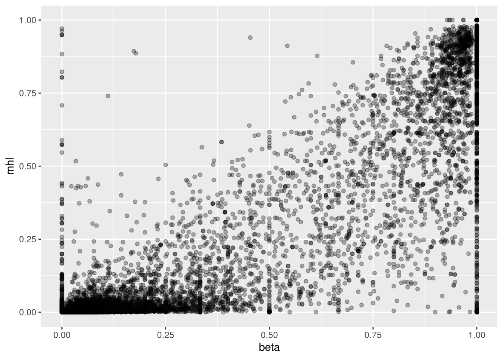
for_beta_all %>% filter(seqnames == "chr1") %>%
group_by(seqnames, start, beta) %>%
summarise(mean_alpha = mean(alpha)) %>%
ungroup() %>%
mutate(mhl = mhl_gm1_subset[match(.$start, mhl_gm1_subset$start), "MHL"]) %>%
ggplot(aes(x = mean_alpha, y = mhl, colour = beta)) +
geom_point(alpha = 0.3)`summarise()` has grouped output by 'seqnames', 'start'. You can override using
the `.groups` argument.Warning: Removed 69969 rows containing missing values or values outside the scale range
(`geom_point()`).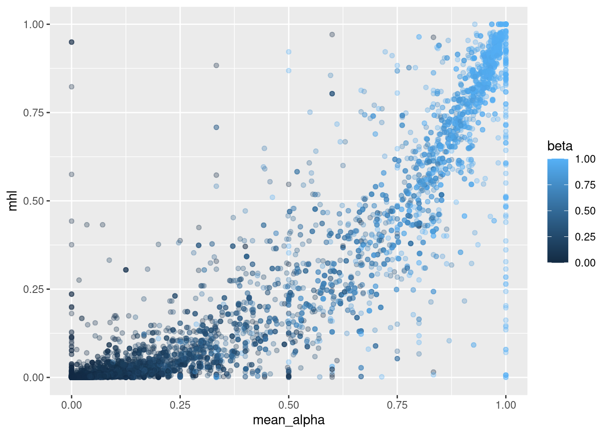
test_mhl <- for_beta_all %>% filter(seqnames == "chr1") %>%
group_by(seqnames, start, beta) %>%
summarise(mean_alpha = mean(alpha)) %>%
ungroup() %>%
mutate(mhl = mhl_gm1_subset[match(.$start, mhl_gm1_subset$start), "MHL"])`summarise()` has grouped output by 'seqnames', 'start'. You can override using
the `.groups` argument.cor.test(test_mhl$mean_alpha, test_mhl$beta)
Pearson's product-moment correlation
data: test_mhl$mean_alpha and test_mhl$beta
t = 844.77, df = 94984, p-value < 2.2e-16
alternative hypothesis: true correlation is not equal to 0
95 percent confidence interval:
0.9386827 0.9401767
sample estimates:
cor
0.9394342 cor.test(test_mhl$mean_alpha, test_mhl$mhl)
Pearson's product-moment correlation
data: test_mhl$mean_alpha and test_mhl$mhl
t = 436.6, df = 25015, p-value < 2.2e-16
alternative hypothesis: true correlation is not equal to 0
95 percent confidence interval:
0.9387550 0.9416305
sample estimates:
cor
0.9402095 cor.test(test_mhl$beta, test_mhl$mhl)
Pearson's product-moment correlation
data: test_mhl$beta and test_mhl$mhl
t = 332.1, df = 25015, p-value < 2.2e-16
alternative hypothesis: true correlation is not equal to 0
95 percent confidence interval:
0.9005267 0.9051091
sample estimates:
cor
0.9028435 Q: MHL compared with my previous plots of grouped alphas
mhl_gm1_subset[100:1000,] %>%
ggplot(aes(x = start, y = MHL)) +
geom_line()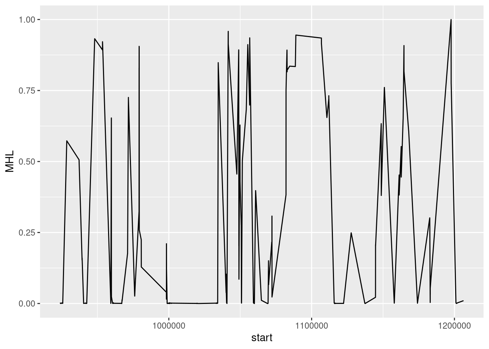
for_beta_all_subset <- for_beta_all %>% filter(seqnames == "chr1")just_beta <- for_beta_all %>% filter(seqnames == "chr1") %>% distinct(seqnames, start, beta) %>% group_by(start) %>% mutate(coverage = n()) %>% ungroup() %>% data.frame() %>% .[order(.$start),] %>%
mutate(row_num = 1:nrow(.)) %>%
mutate(beta_high = ifelse(beta >= 0.8 & beta < 1, "high", "other"))
grouped_betas <- just_beta %>%
group_by(beta_high) %>%
mutate(consec = n()) %>%
mutate(count = 1:n()) %>%
ungroup() %>%
mutate(length = sequence(rle(.$beta_high)$lengths)) %>%
mutate(group = cumsum(c(TRUE, diff(length) <= 0))) %>%
group_by(group) %>%
mutate(length = n(), av_coverage = mean(coverage), av_beta = mean(beta)) %>%
ungroup() %>% filter(beta_high == "high", length > 2) %>% data.frame()
poten_groups <- for_beta_all %>% filter(seqnames == "chr1") %>% mutate(beta_range_group_num = grouped_betas[match(.$start, grouped_betas$start), "group"],
beta_range_group_length = grouped_betas[match(.$start, grouped_betas$start), "length"]) %>%
filter(!is.na(beta_range_group_num)) %>% distinct(read_id, alpha, beta_range_group_num, beta_range_group_length) %>%
mutate(beta_range_group_num = as.factor(beta_range_group_num)) %>%
group_by(beta_range_group_num) %>%
summarise(bimodal_p = list(diptest::dip.test(alpha)$p.value)
) %>%
unnest(cols = c(bimodal_p)) %>% filter(bimodal_p < 0.01) %>% .$beta_range_group_numWarning: There were 8 warnings in `summarise()`.
The first warning was:
ℹ In argument: `bimodal_p = list(diptest::dip.test(alpha)$p.value)`.
ℹ In group 82: `beta_range_group_num = 1092`.
Caused by warning in `regularize.values()`:
! collapsing to unique 'x' values
ℹ Run `dplyr::last_dplyr_warnings()` to see the 7 remaining warnings.source("../code/processData.R")
plot_list <- list()
for (i in 1:5) {
row_pos <- just_beta %>%
group_by(beta_high) %>%
mutate(consec = n()) %>%
mutate(count = 1:n()) %>%
ungroup() %>%
mutate(length = sequence(rle(.$beta_high)$lengths)) %>%
mutate(group = cumsum(c(TRUE, diff(length) <= 0))) %>% filter(group == i)
min_row <- min(row_pos$row_num)
max_row <- max(row_pos$row_num)
plot_list[[i]] <- rrbs_plot(for_beta_all_subset, for_beta_all_subset %>% filter(start %in% just_beta[min_row:max_row,]$start) %>% .$read_id %>% unique(), count_instead = TRUE)
}
plot_list[[1]]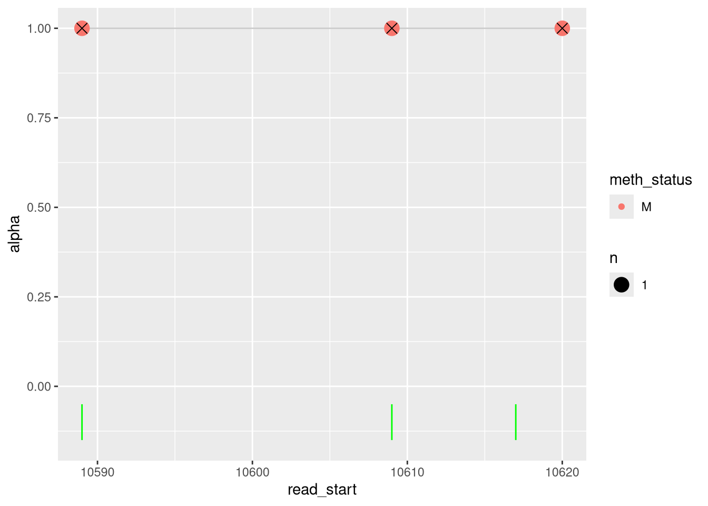
[[2]]
[[3]]
[[4]]
[[5]]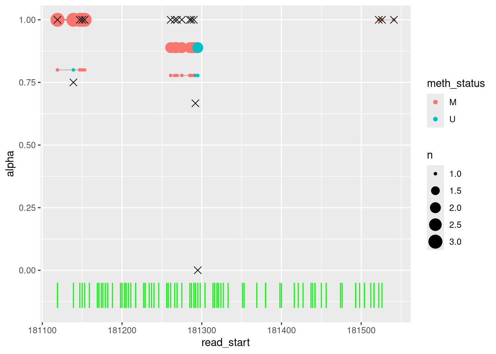
* arbitarirly find one because section with multiple readsmhl_gm1_subset %>% filter(start >= 136870) %>% .[1:10,] seqnames start end MHL
1 chr1 779096 779097 0.001587302
2 chr1 779100 779101 0.001587302
3 chr1 779110 779111 0.001587302
4 chr1 779130 779131 0.001587302
5 chr1 827413 827414 0.002083333
6 chr1 827426 827427 0.002083333
7 chr1 827429 827430 0.002083333
8 chr1 827445 827446 0.002083333
9 chr1 827470 827471 0.001666667
10 chr1 827485 827486 0.001666667rrbs_plot(for_beta_all_subset, for_beta_all_subset %>% filter(start >= 136870, start <= 136920) %>% .$read_id %>% unique(), count_instead = TRUE) +
geom_line(data = filter(mhl_gm1_subset, start >= 181000, start <= 181650), aes(x = start, y = MHL), alpha = 0.3)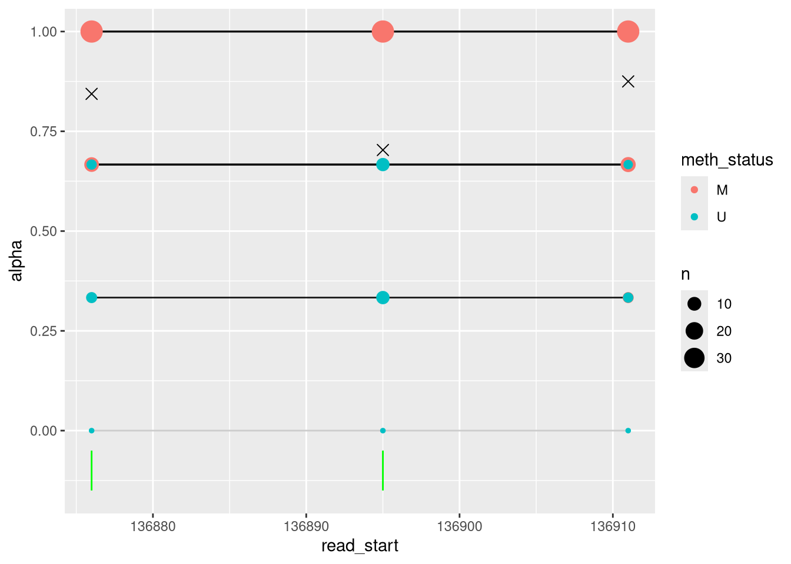
rrbs_plot(for_beta_all_subset, for_beta_all_subset %>% filter(start >= 181000, start <= 181650) %>% .$read_id %>% unique(), count_instead = TRUE) +
geom_line(data = filter(mhl_gm1_subset, start >= 181000, start <= 181650), aes(x = start, y = MHL), alpha = 0.3)
mhl_gm1 %>%
ggplot(aes(x = log2(MHL + 0.1))) +
geom_density()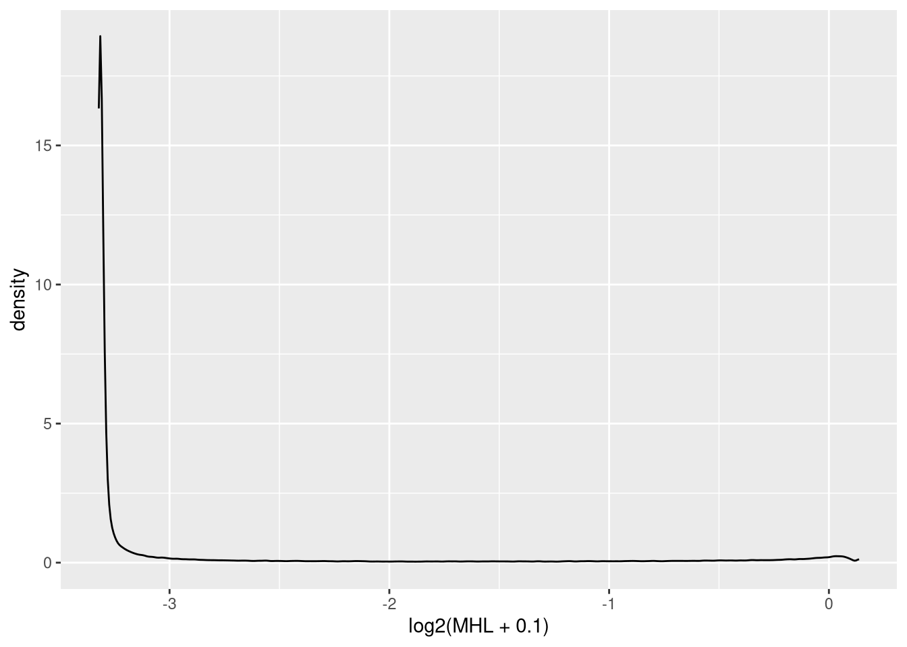
mhl_gm1 %>%
ggplot(aes(x = MHL)) +
geom_histogram(bins = 75)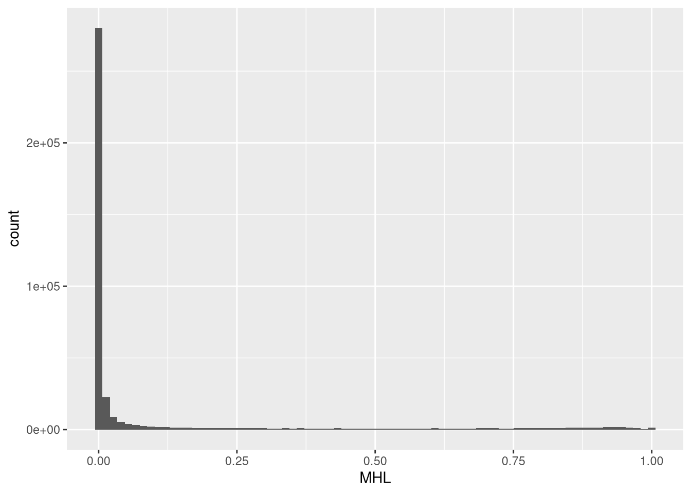
for_beta_all %>% distinct(read_id, alpha) %>%
ggplot(aes(x = alpha)) +
geom_histogram(bins = 75)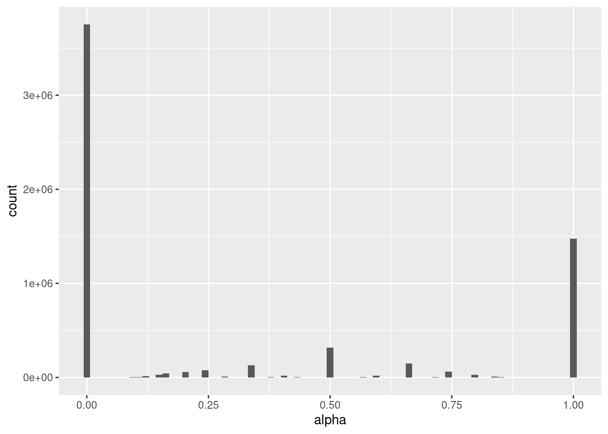
for_beta_all_subset %>%
group_by(seqnames, start, beta) %>%
summarise(mean_alpha = mean(alpha)) %>%
ungroup() %>%
mutate(mhl = mhl_gm1_subset[match(.$start, mhl_gm1_subset$start), "MHL"],
row_num = 1:n()) %>% .[1:10,]`summarise()` has grouped output by 'seqnames', 'start'. You can override using
the `.groups` argument.# A tibble: 10 × 6
seqnames start beta mean_alpha mhl row_num
<chr> <int> <dbl> <dbl> <dbl> <int>
1 chr1 10589 1 1 NA 1
2 chr1 10609 1 1 NA 2
3 chr1 10620 1 1 NA 3
4 chr1 136876 0.844 0.807 NA 4
5 chr1 136895 0.703 0.807 NA 5
6 chr1 136911 0.875 0.807 NA 6
7 chr1 181119 1 0.95 NA 7
8 chr1 181139 0.75 0.95 NA 8
9 chr1 181147 1 0.95 NA 9
10 chr1 181150 1 0.95 NA 10827532 - 827413 [1] 119rrbs_plot(for_beta_all_subset, for_beta_all_subset %>% filter(start >= 827413, start <= 827532) %>% .$read_id %>% unique(), count_instead = TRUE) +
geom_line(data = filter(mhl_gm1_subset, start >= 827413, start <= 827532), aes(x = start, y = MHL), alpha = 0.3, colour = "purple")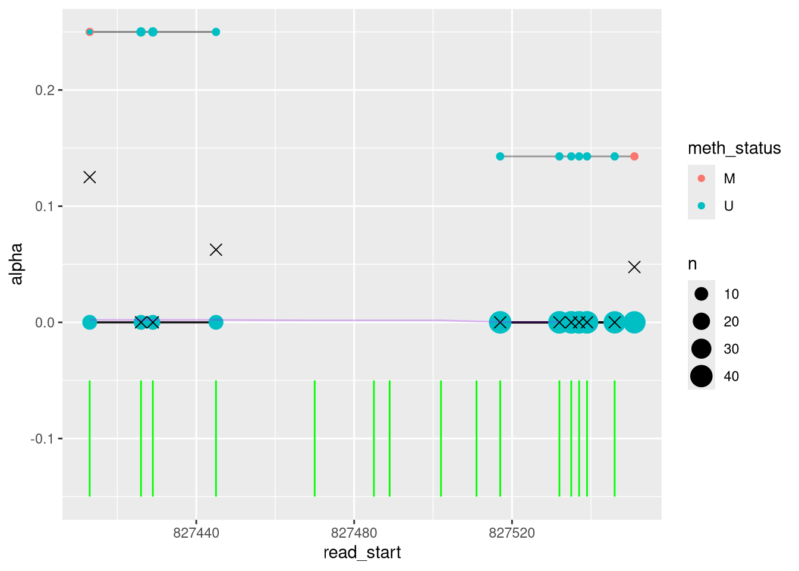
for_beta_all_subset %>%
group_by(seqnames, start, beta) %>%
summarise(mean_alpha = mean(alpha)) %>%
ungroup() %>%
mutate(mhl = mhl_gm1_subset[match(.$start, mhl_gm1_subset$start), "MHL"],
row_num = 1:n()) %>%
filter(!is.na(mhl)) %>%
filter(mhl > 0.2) %>% .[1:10,]`summarise()` has grouped output by 'seqnames', 'start'. You can override using
the `.groups` argument.# A tibble: 10 × 6
seqnames start beta mean_alpha mhl row_num
<chr> <int> <dbl> <dbl> <dbl> <int>
1 chr1 909867 0.636 0.691 0.519 148
2 chr1 909871 0.636 0.691 0.519 149
3 chr1 909876 0.727 0.691 0.519 150
4 chr1 909891 0.818 0.691 0.519 151
5 chr1 909898 0.636 0.691 0.519 152
6 chr1 928536 0 0.333 0.573 315
7 chr1 937138 1 1 0.506 353
8 chr1 948110 0.983 0.983 0.932 468
9 chr1 953553 0.960 0.954 0.893 475
10 chr1 953567 0.919 0.957 0.922 476for_beta_all_subset %>%
group_by(seqnames, start, beta) %>%
summarise(mean_alpha = mean(alpha)) %>%
ungroup() %>%
mutate(mhl = mhl_gm1_subset[match(.$start, mhl_gm1_subset$start), "MHL"],
row_num = 1:n()) %>% .[145:155,]`summarise()` has grouped output by 'seqnames', 'start'. You can override using
the `.groups` argument.# A tibble: 11 × 6
seqnames start beta mean_alpha mhl row_num
<chr> <int> <dbl> <dbl> <dbl> <int>
1 chr1 909429 0.857 0.821 NA 145
2 chr1 909449 0.857 0.821 NA 146
3 chr1 909456 0.571 0.821 NA 147
4 chr1 909867 0.636 0.691 0.519 148
5 chr1 909871 0.636 0.691 0.519 149
6 chr1 909876 0.727 0.691 0.519 150
7 chr1 909891 0.818 0.691 0.519 151
8 chr1 909898 0.636 0.691 0.519 152
9 chr1 909956 0.273 0.152 NA 153
10 chr1 909959 0.0909 0.152 NA 154
11 chr1 909961 0.182 0.152 0.117 155for_beta_all_subset_sum <- for_beta_all_subset %>%
group_by(seqnames, start, beta) %>%
summarise(mean_alpha = mean(alpha)) %>%
ungroup() %>%
mutate(mhl = mhl_gm1_subset[match(.$start, mhl_gm1_subset$start), "MHL"],
row_num = 1:n())`summarise()` has grouped output by 'seqnames', 'start'. You can override using
the `.groups` argument.rrbs_plot(for_beta_all_subset, for_beta_all_subset %>% filter(start >= 909867, start <= 909959) %>% .$read_id %>% unique(), count_instead = TRUE) +
geom_line(data = filter(mhl_gm1_subset, start >= 909867, start <= 909959), aes(x = start, y = MHL), alpha = 0.3, colour = "purple") +
geom_line(data = filter(for_beta_all_subset_sum, start >= 909867, start <= 909959), aes(x = start, y = mean_alpha), alpha = 0.3, colour = "orange")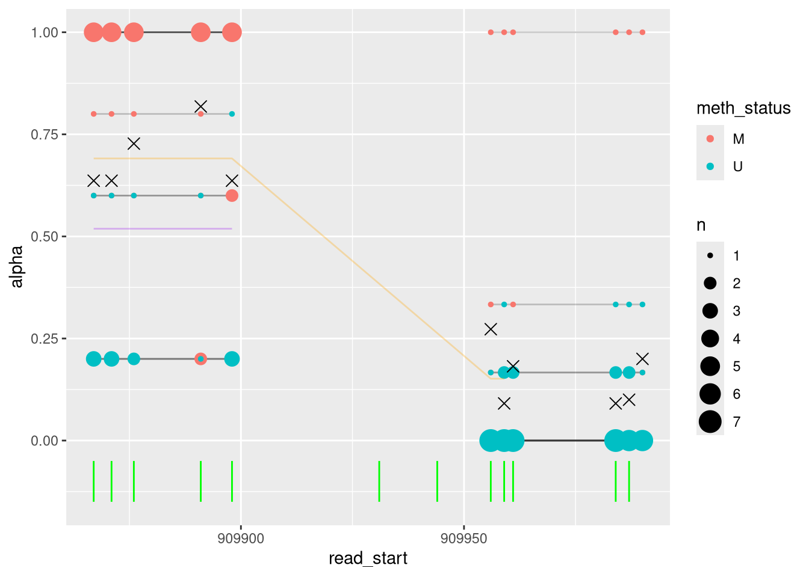
* row 494-498 * high beta + mean alpha, lower mhlfor_beta_all_subset_sum[494:498,]# A tibble: 5 × 6
seqnames start beta mean_alpha mhl row_num
<chr> <int> <dbl> <dbl> <dbl> <int>
1 chr1 959748 0.938 0.871 0.653 494
2 chr1 959756 0.896 0.871 0.653 495
3 chr1 959761 0.875 0.871 0.653 496
4 chr1 959770 0.896 0.871 0.653 497
5 chr1 959777 0.75 0.871 0.653 498rrbs_plot(for_beta_all_subset, for_beta_all_subset %>% filter(start >= 959748, start <= 959777) %>% .$read_id %>% unique(), count_instead = TRUE) +
geom_line(data = filter(mhl_gm1_subset, start >= 959748, start <= 959777), aes(x = start, y = MHL), alpha = 0.3, colour = "purple") +
geom_line(data = filter(for_beta_all_subset_sum, start >= 959748, start <= 959777), aes(x = start, y = mean_alpha), alpha = 0.3, colour = "orange")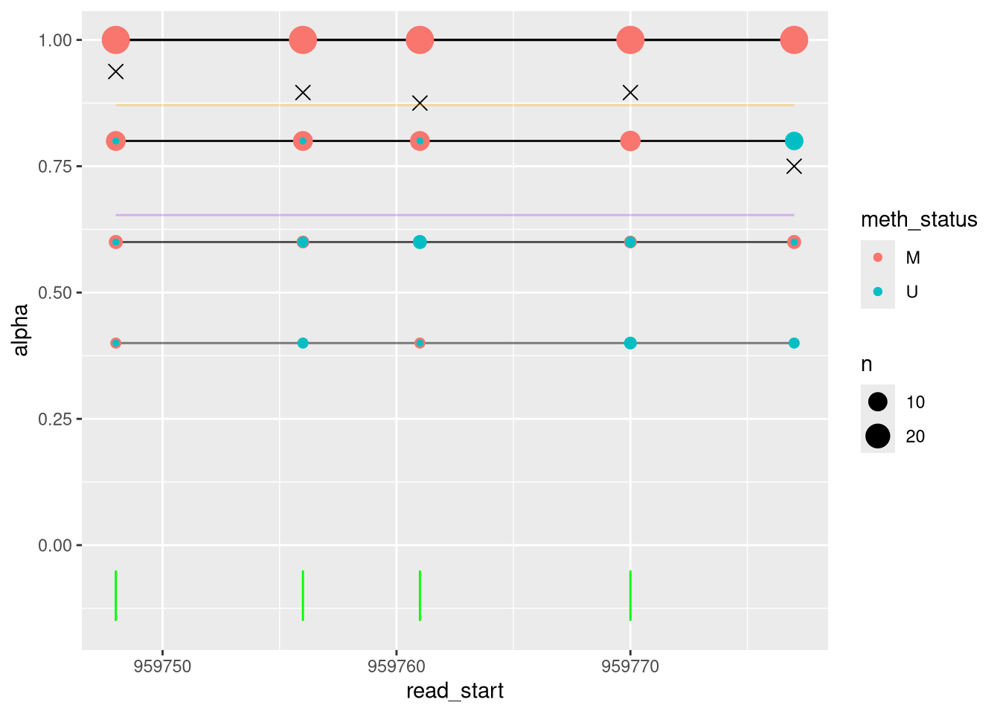
- when mean_alpha = 1 ** seems to be a bigger distribution of mhl
for_beta_all_subset_sum %>% filter(mean_alpha == 1, !is.na(mhl)) %>%
ggplot(aes(x = as.factor(mean_alpha), y = mhl)) +
geom_violin()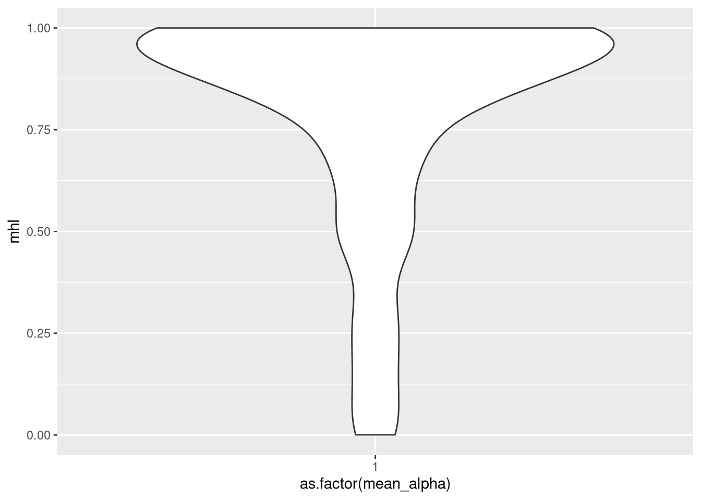
for_beta_all_subset_sum %>% filter(mean_alpha == 0, !is.na(mhl)) %>%
ggplot(aes(x = as.factor(mean_alpha), y = mhl)) +
geom_violin()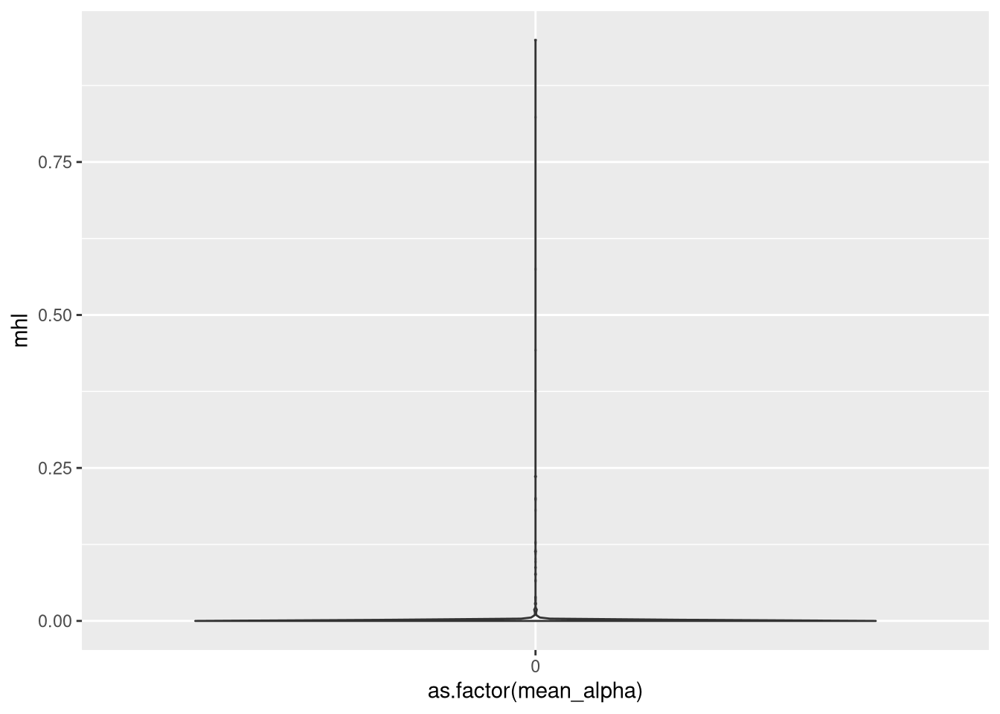
mhl_gm1_subset[1:10,] seqnames start end MHL
1 chr1 779096 779097 0.001587302
2 chr1 779100 779101 0.001587302
3 chr1 779110 779111 0.001587302
4 chr1 779130 779131 0.001587302
5 chr1 827413 827414 0.002083333
6 chr1 827426 827427 0.002083333
7 chr1 827429 827430 0.002083333
8 chr1 827445 827446 0.002083333
9 chr1 827470 827471 0.001666667
10 chr1 827485 827486 0.001666667FDRP
fdrp_gm1 <- read.table("/researchers/caitlin.page/cf_nano/run_metheor/fdrp_ENCFF000LYO.tsv")
colnames(fdrp_gm1) <- c("seqnames", "start", "end", "FDRP")
fdrp_gm1 <- fdrp_gm1 %>% filter(seqnames == "chr1")
fdrp_gm1$start <- fdrp_gm1$start + 1fdrp_gm1 %>% filter(seqnames == "chr1") %>%
ggplot(aes(x = FDRP)) +
geom_density()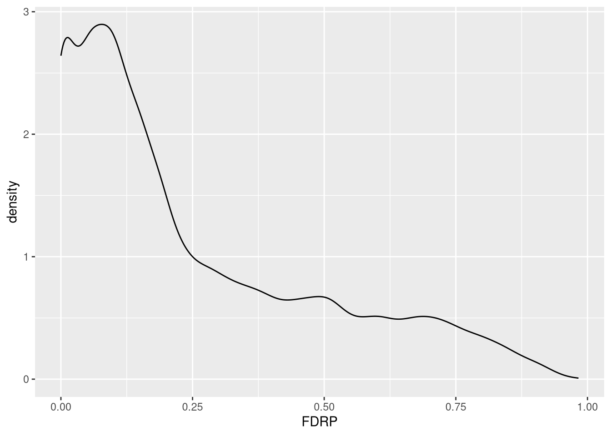
fdrp_gm1[1:10,] seqnames start end FDRP
1 chr1 136876 136877 0.5615385
2 chr1 136895 136896 0.5346154
3 chr1 136911 136912 0.6166667
4 chr1 191438 191439 0.2637363
5 chr1 634024 634025 0.0000000
6 chr1 634028 634029 0.0000000
7 chr1 777996 777997 0.6928105
8 chr1 778008 778009 0.6928105
9 chr1 778020 778021 0.6928105
10 chr1 778067 778068 0.5736842for_beta_all_subset_sum %>% mutate(fdrp = fdrp_gm1[match(.$start, fdrp_gm1$start), "FDRP"]) %>%
ggplot(aes(x = mean_alpha, y = fdrp)) +
geom_point(alpha = 0.3)Warning: Removed 58610 rows containing missing values or values outside the scale range
(`geom_point()`).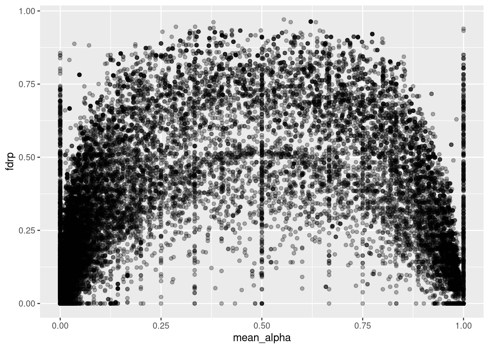
for_beta_all_subset_sum %>% mutate(fdrp = fdrp_gm1[match(.$start, fdrp_gm1$start), "FDRP"]) %>%
ggplot(aes(x = beta, y = fdrp)) +
geom_point(alpha = 0.3)Warning: Removed 58610 rows containing missing values or values outside the scale range
(`geom_point()`).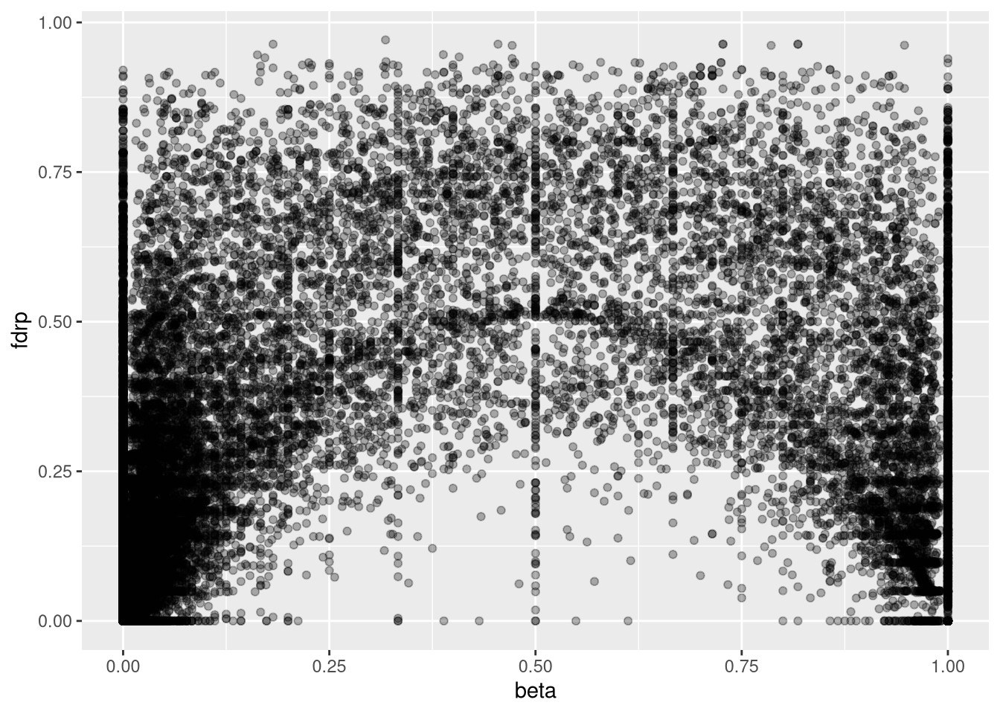
for_beta_all_subset_sum %>% mutate(fdrp = fdrp_gm1[match(.$start, fdrp_gm1$start), "FDRP"]) %>%
ggplot(aes(x = mhl, y = fdrp)) +
geom_point(alpha = 0.3)Warning: Removed 69969 rows containing missing values or values outside the scale range
(`geom_point()`).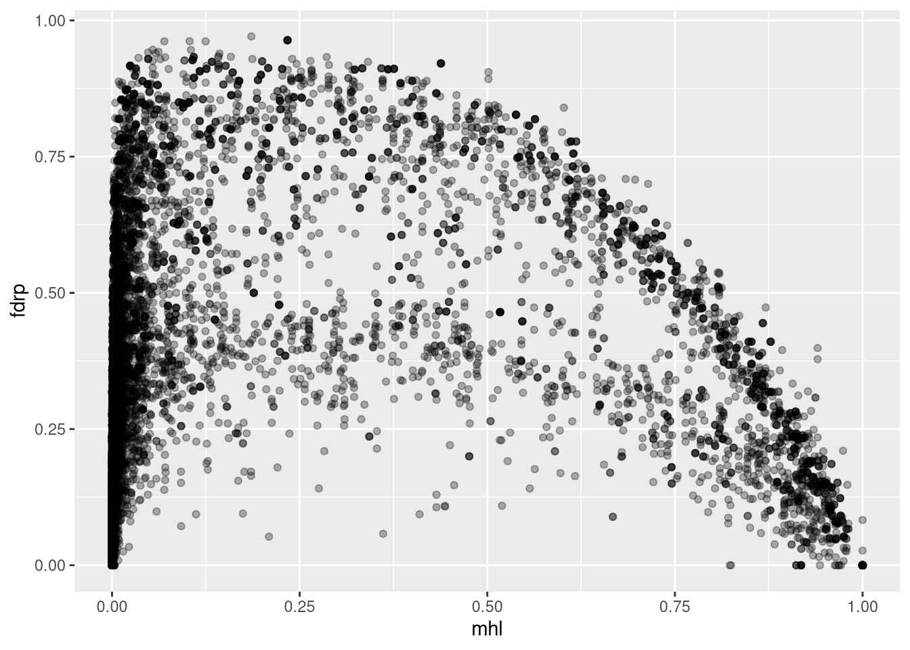
- well these plots mean nothing
- because fdrp measures something different
entropy
entropy_gm1 <- read.table("/researchers/caitlin.page/cf_nano/run_metheor/me_ENCFF000LYO.tsv")
colnames(entropy_gm1) <- c("seqnames", "start", "start_2", "start_3", "start_4", "ME")
entropy_gm1$start <- entropy_gm1$start + 1
entropy_gm1$start_2 <- entropy_gm1$start_2 + 1
entropy_gm1$start_3 <- entropy_gm1$start_3 + 1
entropy_gm1$start_4 <- entropy_gm1$start_4 + 1
entropy_gm1 <- entropy_gm1 %>% filter(seqnames == "chr1") %>% .[order(.$start),]entropy_gm1 %>%
ggplot(aes(x = ME)) +
geom_density()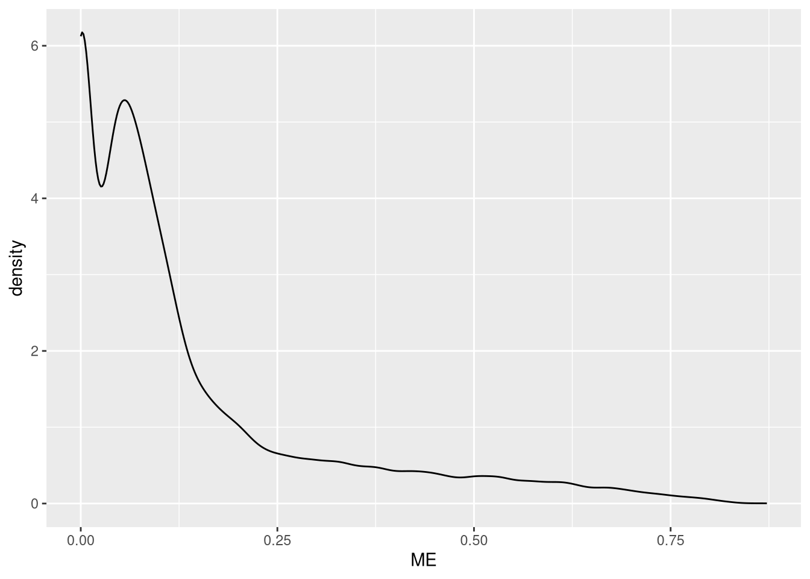
for_beta_all_subset_sum %>% mutate(entropy = entropy_gm1[match(.$start, entropy_gm1$start), "ME"]) %>%
ggplot(aes(x = mean_alpha, y = entropy)) +
geom_point(alpha = 0.3)Warning: Removed 80720 rows containing missing values or values outside the scale range
(`geom_point()`).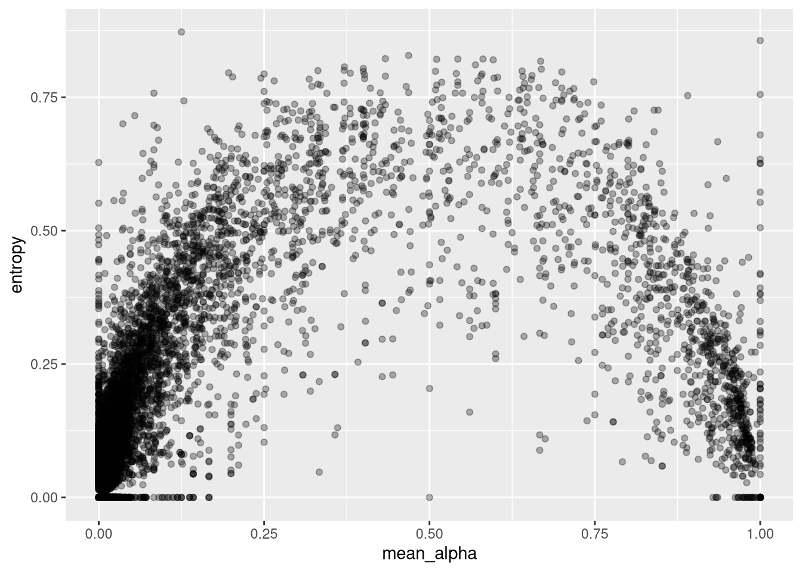
for_beta_all_subset_sum %>% mutate(fdrp = fdrp_gm1[match(.$start, fdrp_gm1$start), "FDRP"]) %>%
mutate(entropy = entropy_gm1[match(.$start, entropy_gm1$start), "ME"]) %>%
ggplot(aes(x = fdrp, y = entropy)) +
geom_point(alpha = 0.3)Warning: Removed 80732 rows containing missing values or values outside the scale range
(`geom_point()`).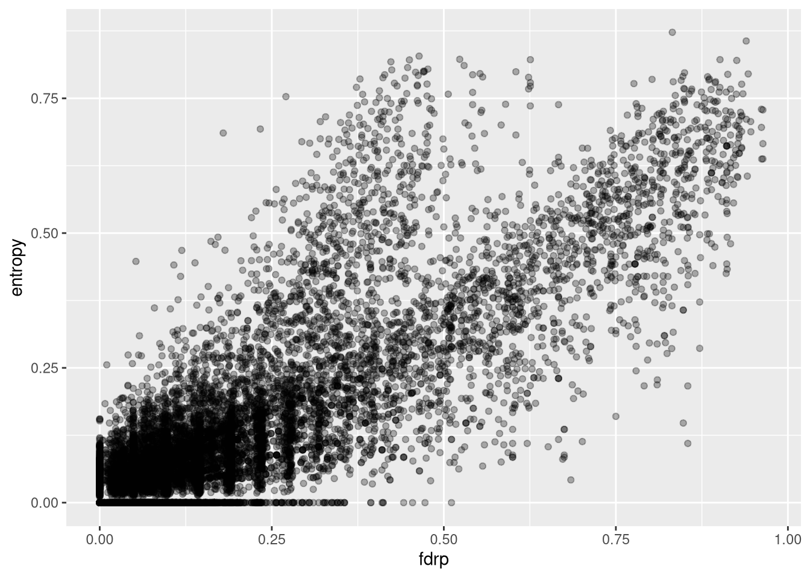
for_beta_all_subset_sum <- for_beta_all_subset_sum %>%
mutate(var_alpha = for_beta_all_subset %>% group_by(start) %>% summarise(var_alpha = var(alpha)) %>% .$var_alpha) %>%
mutate(fdrp = fdrp_gm1[match(.$start, fdrp_gm1$start), "FDRP"]) %>%
mutate(entropy = entropy_gm1[match(.$start, entropy_gm1$start), "ME"])for_beta_all_subset_sum %>%
ggplot(aes(x = var_alpha, y = entropy)) +
geom_point(alpha = 0.3)Warning: Removed 81256 rows containing missing values or values outside the scale range
(`geom_point()`).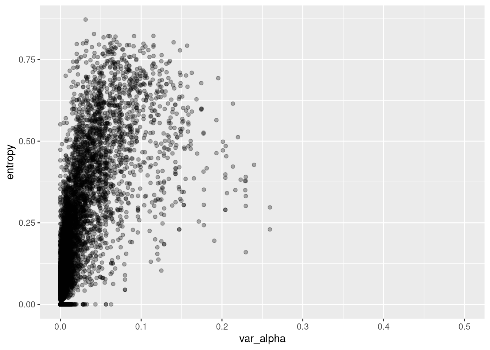
for_beta_all_subset_sum %>%
ggplot(aes(x = var_alpha, y = fdrp)) +
geom_point(alpha = 0.3)Warning: Removed 60589 rows containing missing values or values outside the scale range
(`geom_point()`).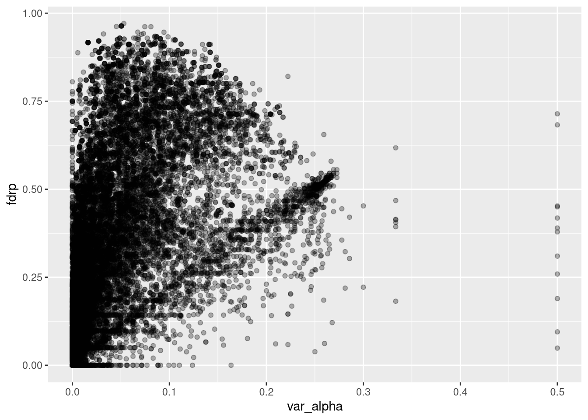
cor.test(for_beta_all_subset_sum$var_alpha, for_beta_all_subset_sum$entropy)
Pearson's product-moment correlation
data: for_beta_all_subset_sum$var_alpha and for_beta_all_subset_sum$entropy
t = 126.62, df = 13728, p-value < 2.2e-16
alternative hypothesis: true correlation is not equal to 0
95 percent confidence interval:
0.7261603 0.7415945
sample estimates:
cor
0.7339721 cor.test(for_beta_all_subset_sum$var_alpha, for_beta_all_subset_sum$fdrp)
Pearson's product-moment correlation
data: for_beta_all_subset_sum$var_alpha and for_beta_all_subset_sum$fdrp
t = 140.5, df = 34395, p-value < 2.2e-16
alternative hypothesis: true correlation is not equal to 0
95 percent confidence interval:
0.5971157 0.6105447
sample estimates:
cor
0.6038731 cor.test(for_beta_all_subset_sum$entropy, for_beta_all_subset_sum$fdrp)
Pearson's product-moment correlation
data: for_beta_all_subset_sum$entropy and for_beta_all_subset_sum$fdrp
t = 181.27, df = 14252, p-value < 2.2e-16
alternative hypothesis: true correlation is not equal to 0
95 percent confidence interval:
0.8301145 0.8400493
sample estimates:
cor
0.83515 compare variation to DTU??
- entropy and fdrp are both variation measurements
- so what does it look like in dtu?
ts.gene.gene <- readRDS("/researchers/caitlin.page/cf_nano/r_output/ts.gene.gene.rds")annots <- c("hg38_basicgenes", "hg38_genes_intergenic")
annotations <- annotatr::build_annotations(genome = 'hg38', annotations = annots)Loading required package: GenomicFeaturesLoading required package: AnnotationDbiLoading required package: BiobaseWelcome to Bioconductor
Vignettes contain introductory material; view with
'browseVignettes()'. To cite Bioconductor, see
'citation("Biobase")', and for packages 'citation("pkgname")'.
Attaching package: 'AnnotationDbi'The following object is masked from 'package:dplyr':
selectThe following object is masked from 'package:plyranges':
select'select()' returned 1:1 mapping between keys and columnsBuilding promoters...Building 1to5kb upstream of TSS...Building intergenic...Building 5UTRs...Building 3UTRs...Building exons...Building introns...seqs <- annotations %>% data.frame() %>% distinct(seqnames) %>% .[1:22,]
annotations <- annotations %>% data.frame() %>% filter(seqnames %in% seqs)
for_beta_all_genes <- find_overlaps(as_granges(for_beta_all), as_granges(annotations)) %>% data.frame()Warning in .merge_two_Seqinfo_objects(x, y): Each of the 2 combined objects has sequence levels not in the other:
- in 'x': KI270733.1, KI270442.1, GL000225.1, GL000214.1, GL000220.1, KZ208915.1, GL000216.2, KI270724.1, KI270714.1, KI270722.1, KI270723.1, KV766196.1, KI270772.1, KI270712.1, KI270728.1, KQ759762.1, KI270853.1, GL383533.1, KI270821.1, GL000253.2, ML143364.1, KZ208921.1, GL000219.1, KI270830.1, KI270769.1, KI270905.1, KI270832.1, KV766198.1, KI270785.1, KQ458386.1, KI270879.1, KI270880.1, KI270709.1, KI270808.1, GL949752.1, KI270819.1, KI270734.1, KN538364.1, KZ208906.1, KI270750.1, KI270924.1, KI270835.1, KI270736.1, KV880766.1, KI270898.1, KV575244.1, KI270713.1, KI270745.1, ML143375.1, KI270754.1, KI270539.1, KI270913.1, GL000194.1, KN196479.1, KI270847.1, ML143371.1, KI270894.1, GL000257.2, KI270780.1, GL000251.2, KI270878.1, KN196472.1, ML143365.1, KI270784.1, KI270749.1, KI270842.1, KI270725.1, KZ559113.1, KI270438.1, KI270927.1, KI270824.1, KI270729.1, ML143378.1, KI270744.1, KI270937.1, KI270845.1, KN538371.1, KI270856.1, KI270817.1, KI270827.1, KI270834.1, KZ208917.1, KQ031389.1, KI270854.1, KI270857.1, KI270768.1, KI270519.1, KI270816.1, KI270903.1, ML143376.1, KI270860.1, KI270862.1, ML143355.1, KI270735.1, KI270706.1, KI270721.1, ML143358.1, KI270848.1, ML143377.1, KV766193.1, KN196484.1, KI270774.1, GL000252.2, KI270757.1, KI270792.1, KZ559100.1, KZ559109.1, GL000218.1, KI270900.1, KI270804.1, ML143380.1, KZ208922.1, KQ759759.1, GL000258.2, KI270732.1, GL000254.2, KZ559110.1, KI270850.1, KQ090017.1, KI270708.1, KI270873.1, KI270753.1, KI270803.1, GL000221.1, GL000256.2, ML143366.1, GL383563.3, GL383545.1, KI270807.1, KI270467.1, KI270912.1, KI270719.1, KI270738.1, GL000208.1, KI270815.1, GL000008.2, KN538360.1, KV880768.1, GL383546.1, KI270776.1, KQ983258.1, KI270802.1, JH159147.1, KI270831.1, KI270925.1, KI270731.1, KI270871.1, GL383526.1, KI270742.1, KI270926.1, KQ090025.1, KN538370.1, KI270793.1, KI270868.1, KI270896.1, KI270522.1, KI270424.1, KI270811.1, KI270707.1, GL383581.2, KI270775.1, KI270869.1, GL949746.1, ML143372.1, KI270812.1, KI270588.1, KI270822.1, KQ090022.1, KQ090026.1, ML143367.1, GL383532.1, KI270846.1, KN196487.1, GL383534.2, GL383555.2, KV880764.1, GL000224.1, KZ208923.1, KI270907.1, KI270876.1, KI270938.1, KI270797.1, KI270759.1, KI270726.1, GL339449.2, KI270801.1, KN538372.1, KI270743.1, KN538361.1, GL383554.1, GL383567.1, KI270795.1, GL000009.2, KZ559105.1, KI270435.1, KV575243.1, KI270747.1, GL000255.2, KV880763.1, KZ208918.1, KI270730.1, GL383557.1, KI270466.1, GL383550.2, KI270791.1, GL383530.1, KI270509.1, KZ559111.1, ML143344.1, GL383542.1, KI270836.1, KZ208912.1, KI270897.1, KI270877.1, KI270787.1, KI270818.1, ML143343.1, KI270908.1, KQ090024.1, GL949753.2, GL949747.2, GL000250.2, KZ208914.1, KI270861.1, KI270887.1, KI270901.1, KV766194.1, KQ458383.1, KI270825.1, ML143345.1, KI270765.1, KZ559101.1, KI270875.1, KN196476.1, KZ208924.1, KI270844.1, KZ208919.1, KN538363.1, KI270448.1, ML143361.1, KI270786.1, KQ983257.1, KI270798.1, KV880765.1, GL383580.2, KI270855.1, KQ031387.1, KI270716.1, KI270746.1, KI270863.1, KI270751.1, GL383568.1, KQ090020.1, GL383571.1, KI270935.1, KZ208913.1, KQ090023.1, KI270829.1, KZ559107.1, KN538369.1, GL877875.1, KZ208904.1, KI270788.1, KI270517.1, KI270758.1, GL383575.2, ML143360.1, ML143369.1, KI270760.1, KI270770.1, ML143385.1, GL383522.1, GL383577.2, ML143353.1, KZ559108.1, KI270805.1, KI270783.1, KI270833.1
- in 'y': chr1_GL383518v1_alt, chr1_GL383519v1_alt, chr1_GL383520v2_alt, chr1_KI270759v1_alt, chr1_KI270760v1_alt, chr1_KI270761v1_alt, chr1_KI270762v1_alt, chr1_KI270763v1_alt, chr1_KI270764v1_alt, chr1_KI270765v1_alt, chr1_KI270766v1_alt, chr1_KI270892v1_alt, chr2_GL383521v1_alt, chr2_GL383522v1_alt, chr2_GL582966v2_alt, chr2_KI270767v1_alt, chr2_KI270768v1_alt, chr2_KI270769v1_alt, chr2_KI270770v1_alt, chr2_KI270771v1_alt, chr2_KI270772v1_alt, chr2_KI270773v1_alt, chr2_KI270774v1_alt, chr2_KI270775v1_alt, chr2_KI270776v1_alt, chr2_KI270893v1_alt, chr2_KI270894v1_alt, chr3_GL383526v1_alt, chr3_JH636055v2_alt, chr3_KI270777v1_alt, chr3_KI270778v1_alt, chr3_KI270779v1_alt, chr3_KI270780v1_alt, chr3_KI270781v1_alt, chr3_KI270782v1_alt, chr3_KI270783v1_alt, chr3_KI270784v1_alt, chr3_KI270895v1_alt, chr3_KI270924v1_alt, chr3_KI270934v1_alt, chr3_KI270935v1_alt, chr3_KI270936v1_alt, chr3_KI270937v1_alt, chr4_GL000257v2_alt, chr4_GL383527v1_alt, chr4_GL383528v1_alt, chr4_KI270785v1_alt, chr4_KI270786v1_alt, chr4_KI270787v1_alt, chr4_KI270788v1_alt, chr4_KI270789v1_alt, chr4_KI270790v1_alt, chr4_KI270896v1_alt, chr4_KI270925v1_alt, chr5_GL339449v2_alt, chr5_GL383530v1_alt, chr5_GL383531v1_alt, chr5_GL383532v1_alt, chr5_GL949742v1_alt, chr5_KI270791v1_alt, chr5_KI270792v1_alt, chr5_KI270793v1_alt, chr5_KI270794v1_alt, chr5_KI270795v1_alt, chr5_KI270796v1_alt, chr5_KI270897v1_alt, chr5_KI270898v1_alt, chr6_GL000250v2_alt, chr6_GL000251v2_alt, chr6_GL000252v2_alt, chr6_GL000253v2_alt, chr6_GL000254v2_alt, chr6_GL000255v2_alt, chr6_GL000256v2_alt, chr6_GL383533v1_alt, chr6_KB021644v2_alt, chr6_KI270758v1_alt, chr6_KI270797v1_alt, chr6_KI270798v1_alt, chr6_KI270799v1_alt, chr6_KI270800v1_alt, chr6_KI270801v1_alt, chr6_KI270802v1_alt, chr7_GL383534v2_alt, chr7_KI270803v1_alt, chr7_KI270804v1_alt, chr7_KI270805v1_alt, chr7_KI270806v1_alt, chr7_KI270807v1_alt, chr7_KI270808v1_alt, chr7_KI270809v1_alt, chr7_KI270899v1_alt, chr8_KI270810v1_alt, chr8_KI270811v1_alt, chr8_KI270812v1_alt, chr8_KI270813v1_alt, chr8_KI270814v1_alt, chr8_KI270815v1_alt, chr8_KI270816v1_alt, chr8_KI270817v1_alt, chr8_KI270818v1_alt, chr8_KI270819v1_alt, chr8_KI270820v1_alt, chr8_KI270821v1_alt, chr8_KI270822v1_alt, chr8_KI270900v1_alt, chr8_KI270901v1_alt, chr8_KI270926v1_alt, chr9_GL383539v1_alt, chr9_GL383540v1_alt, chr9_GL383541v1_alt, chr9_GL383542v1_alt, chr9_KI270823v1_alt, chr10_GL383545v1_alt, chr10_GL383546v1_alt, chr10_KI270824v1_alt, chr10_KI270825v1_alt, chr11_GL383547v1_alt, chr11_JH159136v1_alt, chr11_JH159137v1_alt, chr11_KI270826v1_alt, chr11_KI270827v1_alt, chr11_KI270829v1_alt, chr11_KI270830v1_alt, chr11_KI270831v1_alt, chr11_KI270832v1_alt, chr11_KI270902v1_alt, chr11_KI270903v1_alt, chr11_KI270927v1_alt, chr12_GL383549v1_alt, chr12_GL383550v2_alt, chr12_GL383551v1_alt, chr12_GL383552v1_alt, chr12_GL383553v2_alt, chr12_GL877875v1_alt, chr12_GL877876v1_alt, chr12_KI270833v1_alt, chr12_KI270834v1_alt, chr12_KI270835v1_alt, chr12_KI270836v1_alt, chr12_KI270837v1_alt, chr12_KI270904v1_alt, chr13_KI270838v1_alt, chr13_KI270839v1_alt, chr13_KI270840v1_alt, chr13_KI270841v1_alt, chr13_KI270842v1_alt, chr13_KI270843v1_alt, chr14_KI270844v1_alt, chr14_KI270845v1_alt, chr14_KI270846v1_alt, chr14_KI270847v1_alt, chr15_GL383554v1_alt, chr15_GL383555v2_alt, chr15_KI270848v1_alt, chr15_KI270849v1_alt, chr15_KI270850v1_alt, chr15_KI270851v1_alt, chr15_KI270852v1_alt, chr15_KI270905v1_alt, chr15_KI270906v1_alt, chr16_GL383556v1_alt, chr16_GL383557v1_alt, chr16_KI270853v1_alt, chr16_KI270854v1_alt, chr16_KI270855v1_alt, chr16_KI270856v1_alt, chr17_GL000258v2_alt, chr17_GL383563v3_alt, chr17_GL383564v2_alt, chr17_GL383565v1_alt, chr17_GL383566v1_alt, chr17_JH159146v1_alt, chr17_JH159147v1_alt, chr17_JH159148v1_alt, chr17_KI270857v1_alt, chr17_KI270858v1_alt, chr17_KI270859v1_alt, chr17_KI270860v1_alt, chr17_KI270861v1_alt, chr17_KI270862v1_alt, chr17_KI270907v1_alt, chr17_KI270908v1_alt, chr17_KI270909v1_alt, chr17_KI270910v1_alt, chr18_GL383567v1_alt, chr18_GL383568v1_alt, chr18_GL383569v1_alt, chr18_GL383570v1_alt, chr18_GL383571v1_alt, chr18_GL383572v1_alt, chr18_KI270863v1_alt, chr18_KI270864v1_alt, chr18_KI270911v1_alt, chr18_KI270912v1_alt, chr19_GL000209v2_alt, chr19_GL383573v1_alt, chr19_GL383574v1_alt, chr19_GL383575v2_alt, chr19_GL383576v1_alt, chr19_GL949746v1_alt, chr19_GL949747v2_alt, chr19_GL949748v2_alt, chr19_GL949749v2_alt, chr19_GL949750v2_alt, chr19_GL949751v2_alt, chr19_GL949752v1_alt, chr19_GL949753v2_alt, chr19_KI270865v1_alt, chr19_KI270866v1_alt, chr19_KI270867v1_alt, chr19_KI270868v1_alt, chr19_KI270882v1_alt, chr19_KI270883v1_alt, chr19_KI270884v1_alt, chr19_KI270885v1_alt, chr19_KI270886v1_alt, chr19_KI270887v1_alt, chr19_KI270888v1_alt, chr19_KI270889v1_alt, chr19_KI270890v1_alt, chr19_KI27089- luckily 1 of the top 10 genes is on chr1
dtu_gene <- for_beta_all_genes %>% filter(symbol %in% ts.gene.gene[1:10,]$gene_id) %>% filter(seqnames == "chr1") %>% distinct(seqnames, start, beta, symbol)for_beta_all_subset_sum %>% filter(start %in% dtu_gene$start) %>%
ggplot(aes(x = start, y = entropy)) +
geom_point()Warning: Removed 104 rows containing missing values or values outside the scale range
(`geom_point()`).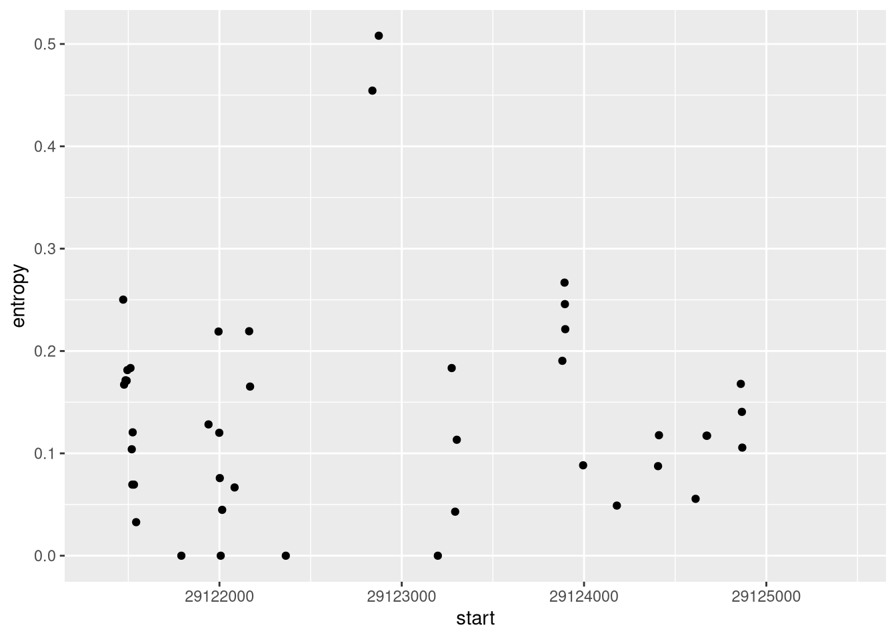
rrbs_plot(for_beta_all_subset, for_beta_all_subset %>% filter(start >= 29124612, start <= 29125168) %>% .$read_id %>% unique(), count_instead = TRUE) +
geom_line(data = filter(mhl_gm1_subset, start >= 29124612, start <= 29125168), aes(x = start, y = MHL), alpha = 0.3, colour = "purple") +
geom_line(data = filter(for_beta_all_subset_sum, start >= 29124612, start <= 29125168), aes(x = start, y = mean_alpha), alpha = 0.3, colour = "orange") +
geom_line(data = filter(for_beta_all_subset_sum, start >= 29124612, start <= 29125168), aes(x = start, y = entropy), alpha = 0.3, colour = "red") +
geom_line(data = filter(for_beta_all_subset_sum, start >= 29124612, start <= 29125168), aes(x = start, y = fdrp), alpha = 0.3, colour = "blue")Warning: Removed 13 rows containing missing values or values outside the scale range
(`geom_line()`).Warning: Removed 10 rows containing missing values or values outside the scale range
(`geom_line()`).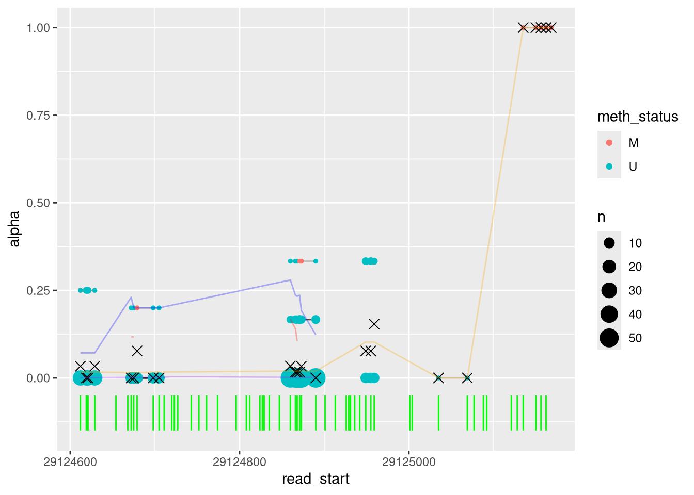
rrbs_plot(for_beta_all_subset, for_beta_all_subset %>% filter(start >= 29124612, start <= 29125168) %>% .$read_id %>% unique(), count_instead = TRUE) +
geom_line(data = filter(mhl_gm1_subset, start >= 29124612, start <= 29125168), aes(x = start, y = MHL), alpha = 0.3, colour = "purple") +
geom_line(data = filter(for_beta_all_subset_sum, start >= 29124612, start <= 29125168), aes(x = start, y = mean_alpha), alpha = 0.3, colour = "orange") +
geom_line(data = filter(for_beta_all_subset_sum, start >= 29124612, start <= 29125168), aes(x = start, y = entropy), alpha = 0.3, colour = "red") +
geom_line(data = filter(for_beta_all_subset_sum, start >= 29124612, start <= 29125168), aes(x = start, y = fdrp), alpha = 0.3, colour = "blue") +
geom_line(data = filter(for_beta_all_subset_sum, start >= 29124612, start <= 29125168), aes(x = start, y = var_alpha), alpha = 0.3, colour = "yellow") +
scale_x_continuous(limits = c(29124600, 29125000)) +
scale_y_continuous(limits = c(-0.1, 0.4))Warning: Removed 7 rows containing non-finite outside the scale range
(`stat_sum()`).Warning: Removed 2 rows containing missing values or values outside the scale range
(`geom_segment()`).Warning: Removed 7 rows containing missing values or values outside the scale range
(`geom_point()`).Warning: Removed 56 rows containing missing values or values outside the scale range
(`geom_segment()`).Warning: Removed 7 rows containing missing values or values outside the scale range
(`geom_line()`).Warning: Removed 13 rows containing missing values or values outside the scale range
(`geom_line()`).Warning: Removed 10 rows containing missing values or values outside the scale range
(`geom_line()`).Warning: Removed 7 rows containing missing values or values outside the scale range
(`geom_line()`).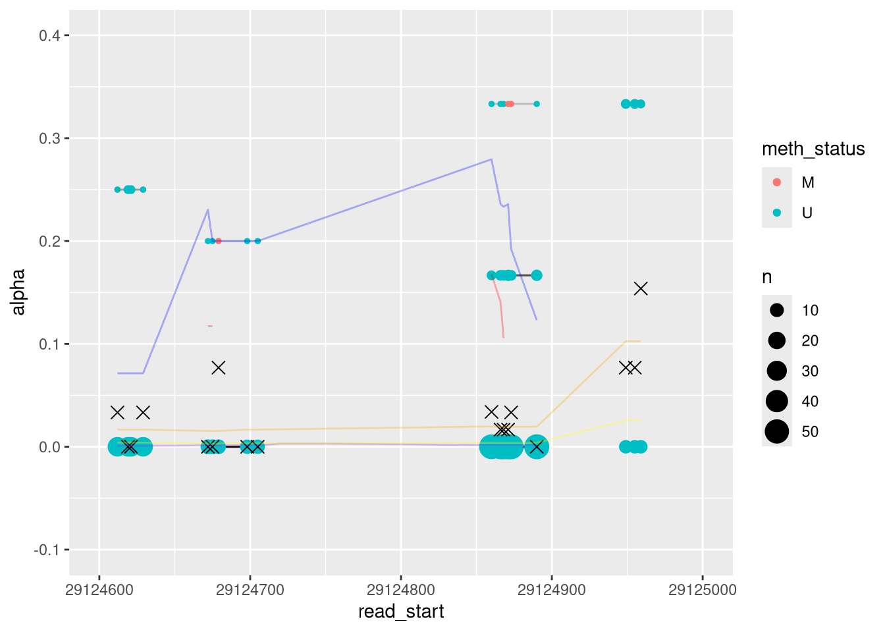
sessionInfo()R version 4.4.1 (2024-06-14)
Platform: x86_64-pc-linux-gnu
Running under: Red Hat Enterprise Linux 9.6 (Plow)
Matrix products: default
BLAS/LAPACK: FlexiBLAS OPENBLAS-OPENMP; LAPACK version 3.9.0
locale:
[1] LC_CTYPE=en_AU.UTF-8 LC_NUMERIC=C
[3] LC_TIME=en_AU.UTF-8 LC_COLLATE=en_AU.UTF-8
[5] LC_MONETARY=en_AU.UTF-8 LC_MESSAGES=en_AU.UTF-8
[7] LC_PAPER=en_AU.UTF-8 LC_NAME=C
[9] LC_ADDRESS=C LC_TELEPHONE=C
[11] LC_MEASUREMENT=en_AU.UTF-8 LC_IDENTIFICATION=C
time zone: Australia/Melbourne
tzcode source: system (glibc)
attached base packages:
[1] stats4 stats graphics grDevices utils datasets methods
[8] base
other attached packages:
[1] org.Hs.eg.db_3.20.0
[2] TxDb.Hsapiens.UCSC.hg38.knownGene_3.20.0
[3] GenomicFeatures_1.58.0
[4] AnnotationDbi_1.68.0
[5] Biobase_2.66.0
[6] edgeR_4.4.2
[7] limma_3.62.2
[8] ggplot2_3.5.2
[9] dplyr_1.1.4
[10] stringr_1.5.1
[11] tidyr_1.3.1
[12] plyranges_1.26.0
[13] GenomicRanges_1.58.0
[14] GenomeInfoDb_1.42.3
[15] IRanges_2.40.1
[16] S4Vectors_0.44.0
[17] BiocGenerics_0.52.0
[18] data.table_1.17.8
[19] annotatr_1.32.0
loaded via a namespace (and not attached):
[1] DBI_1.2.3 bitops_1.0-9
[3] rlang_1.1.6 magrittr_2.0.3
[5] git2r_0.36.2 matrixStats_1.5.0
[7] compiler_4.4.1 RSQLite_2.4.2
[9] png_0.1-8 vctrs_0.6.5
[11] reshape2_1.4.4 pkgconfig_2.0.3
[13] crayon_1.5.3 fastmap_1.2.0
[15] dbplyr_2.5.0 XVector_0.46.0
[17] labeling_0.4.3 utf8_1.2.6
[19] Rsamtools_2.22.0 promises_1.3.3
[21] rmarkdown_2.29 tzdb_0.5.0
[23] UCSC.utils_1.2.0 purrr_1.1.0
[25] bit_4.6.0 BSgenome.Hsapiens.UCSC.hg38_1.4.5
[27] xfun_0.52 zlibbioc_1.52.0
[29] cachem_1.1.0 jsonlite_2.0.0
[31] blob_1.2.4 later_1.4.2
[33] DelayedArray_0.32.0 BiocParallel_1.40.2
[35] parallel_4.4.1 R6_2.6.1
[37] bslib_0.9.0 stringi_1.8.7
[39] RColorBrewer_1.1-3 rtracklayer_1.66.0
[41] diptest_0.77-2 jquerylib_0.1.4
[43] Rcpp_1.1.0 SummarizedExperiment_1.36.0
[45] knitr_1.50 readr_2.1.5
[47] httpuv_1.6.16 Matrix_1.7-0
[49] tidyselect_1.2.1 rstudioapi_0.17.1
[51] dichromat_2.0-0.1 abind_1.4-8
[53] yaml_2.3.10 codetools_0.2-20
[55] curl_6.4.0 lattice_0.22-6
[57] tibble_3.3.0 regioneR_1.38.0
[59] plyr_1.8.9 withr_3.0.2
[61] KEGGREST_1.46.0 evaluate_1.0.4
[63] BiocFileCache_2.14.0 Biostrings_2.74.1
[65] pillar_1.11.0 BiocManager_1.30.26
[67] filelock_1.0.3 MatrixGenerics_1.18.1
[69] whisker_0.4.1 generics_0.1.4
[71] rprojroot_2.1.0 RCurl_1.98-1.17
[73] BiocVersion_3.20.0 hms_1.1.3
[75] scales_1.4.0 glue_1.8.0
[77] tools_4.4.1 AnnotationHub_3.14.0
[79] BiocIO_1.16.0 locfit_1.5-9.12
[81] BSgenome_1.74.0 GenomicAlignments_1.42.0
[83] fs_1.6.6 XML_3.99-0.18
[85] grid_4.4.1 GenomeInfoDbData_1.2.13
[87] restfulr_0.0.16 cli_3.6.5
[89] rappdirs_0.3.3 workflowr_1.7.1
[91] S4Arrays_1.6.0 gtable_0.3.6
[93] sass_0.4.10 digest_0.6.37
[95] SparseArray_1.6.2 rjson_0.2.23
[97] farver_2.1.2 memoise_2.0.1
[99] htmltools_0.5.8.1 lifecycle_1.0.4
[101] httr_1.4.7 statmod_1.5.1
[103] bit64_4.6.0-1